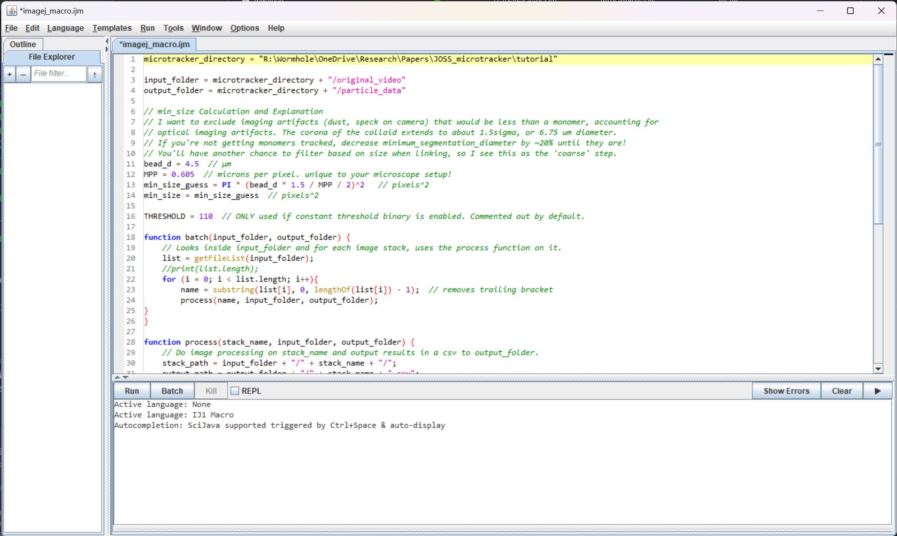

Segmentation
On this page, you will learn what image segmentation is and how to perform it on your video using ImageJ. This step is not needed if you have already segmented your video using another tool.
Intro
Image segmentation is the process of separating the image background (stuff we don't care about) from the foreground (stuff we care about). Here, our foreground is the microbots.
Segmentation can be performed with a variety of methods, from simple (thresholding), to advanced (training neural nets). MicroTracker does not segment videos, due to the variety of softwares and methods available that are specific to the microscopy techniques used. In this guide, we will use ImageJ/Fiji due to its simplicity, flexibility, and established use. However, you may use other software such as illastik if more advanced segmentation is needed, but a walkthrough of that is out of scope of this guide.
Segmentation will process raw microscopy video into a .csv file that contains a row for each observation of a particle on each individual frame. This data does not contain any information about the video, like that the particles are moving/rotating between frames. That's where MicroTracker comes in.
Setup
Download Fiji
If you've conducted microscopy research, you've likely heard of ImageJ. Fiji is a distribution of ImageJ with useful plugins already installed. Download it at their website here.
Use MicroTracker to create an ImageJ macro for your videos
First, make sure you've opened a terminal in the same folder from the step: Creating an environment for your project. To test this, use the pwd() command from Julia base and verify you're in the correct directory. Also, activate the julia environment with the line ] activate .
julia> pwd()
"R:\\Wormhole\\OneDrive\\Research\\Papers\\JOSS_microtracker\\tutorial"
(v1.9)> activate .
Activating project at `R:\Wormhole\OneDrive\Research\Papers\JOSS_microtracker\tutorial`
julia> using MicroTrackerWe'll be using the create_imagej_macro_here function to create an imagej macro to start with.
julia> create_imagej_macro_here(MPP=0.605, minimum_segmentation_diameter=4.5)
[ Info: ImageJ macro created at ~/tutorial/imagej_macro.ijm. See MicroTracker segmentation docs for instructions on how to use itUsing the macro
Now, open Fiji. Navigate to Plugins -> Macros -> Edit and browse to the newly created imagej_macro.ijm.
You should now see an open window with the generate .ijm script for your project. 
You'll notice a few things:
- The
microtracker_directoryvariable was set to the working directory where you ran thecreate_imagej_macro_herefunction, i.e. your project folder. - This macro takes your videos in
/original_videoas input, and outputs the segmented.csvfiles in/particle_data. - The minimum segmentation area is calculated according to what you supplied as the
minimum_segmentation_diameter.
Click "Run" to run the macro. This opens up each video, applies a binary filter, and runs the ImageJ "Analyze Particles" function. See their docs for more information. After doing this, it saves a .csv file of the results with an identical filename to your video.
This macro is just a starter example! Though it works for the vast majority of microbot microscopy video with good contrast, additional filters like gaussian blur, denoise, or background removal may be needed. To see what commands need to be added in the macro, use the Fiji "Record" function at Plugins -> Macros -> Record while you apply the filter in the GUI.
After this process, you should have a .csv file in particle_data for each video in original_video. You can open one up in excel and verify it contains the X, Y, and Label columns.
Caveats
- On Mac, when running the ImageJ macro more than once, it will error with "Permission denied", as it will not overwrite previously saved
.csvfiles with the same name. To fix this, just remove the generated.csvfiles inparticle_databefore re-running the macro.